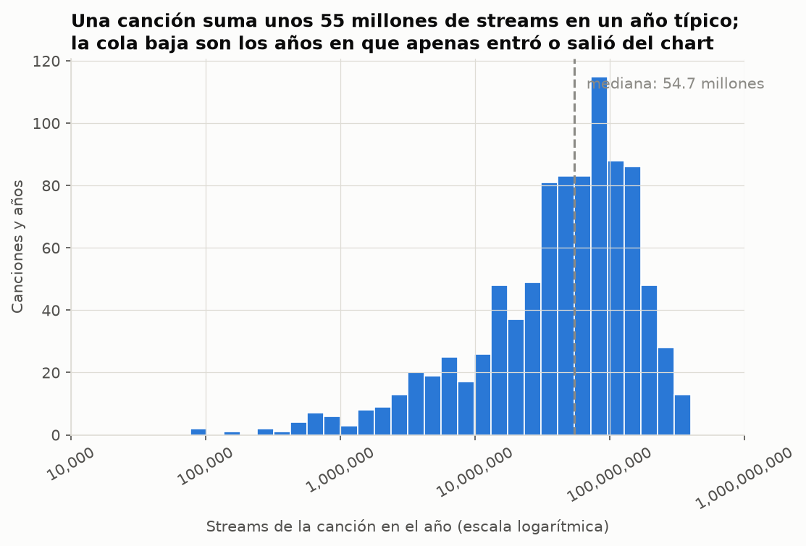
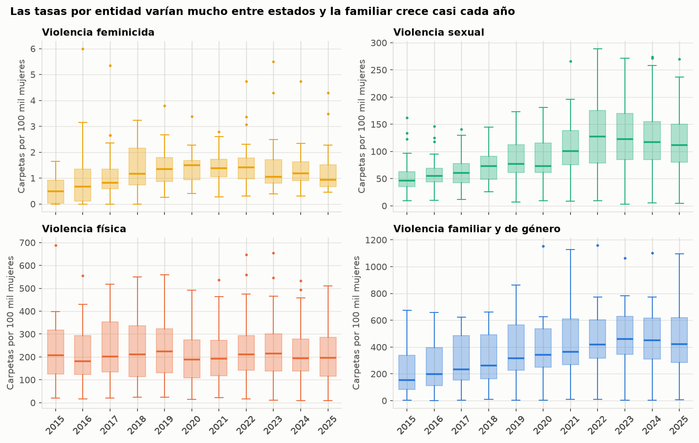
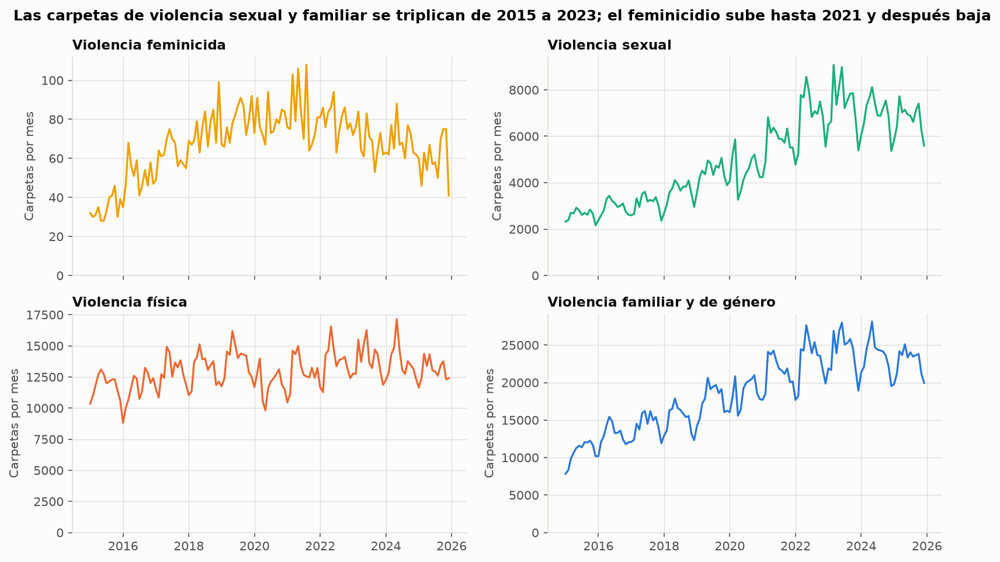
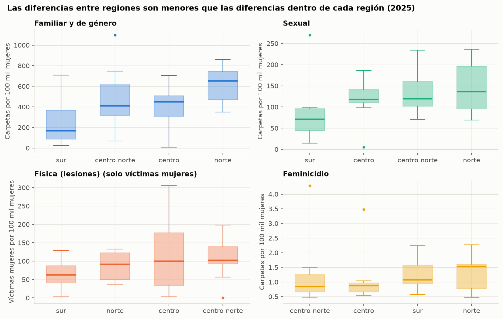
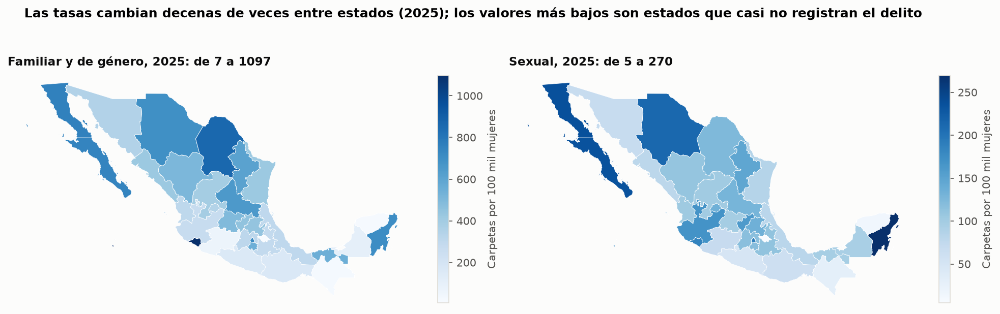
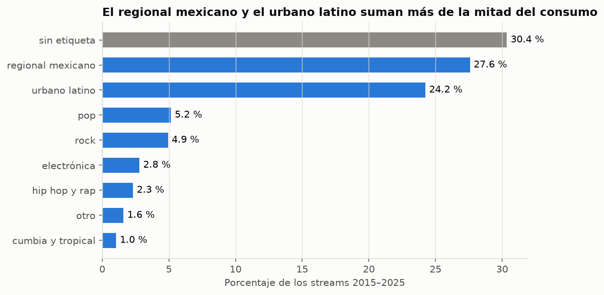
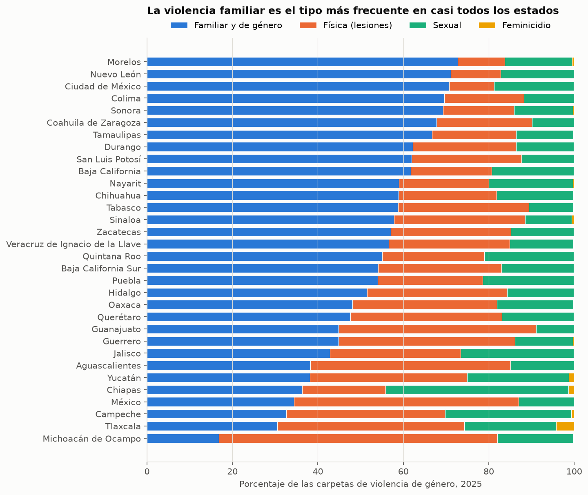

Estadística descriptiva
Cada variable relevante se describe en sus cuatro dimensiones. Las tasas de violencia son por 100 mil mujeres (población de CONAPO del mismo año y entidad), con una observación por entidad y año (32 × 11 = 352); los streams son de la muestra de Kworb. Las medidas completas están en pipeline/data/data-processed/eda/descriptiva_*.parquet.
Localización
| Variable | Unidad | n | Media | Mediana | Media recortada 10 % | Q1 | Q3 | P90 |
|---|---|---|---|---|---|---|---|---|
| Streams por canción y año | canción-año en el chart | 922 | 74.8 M | 54.7 M | 64.0 M | 20.3 M | 106.0 M | 166.7 M |
| Tasa de violencia familiar y de género | entidad-año | 352 | 367.1 | 348.3 | 356.0 | 166.8 | 547.7 | 673.0 |
| Tasa de violencia sexual | entidad-año | 352 | 94.0 | 80.4 | 88.2 | 51.0 | 125.3 | 173.4 |
| Tasa de víctimas mujeres de lesiones | entidad-año | 352 | 92.0 | 85.3 | 85.9 | 44.4 | 128.9 | 173.1 |
| Tasa de feminicidio | entidad-año | 352 | 1.28 | 1.14 | 1.18 | 0.68 | 1.63 | 2.34 |
| Usuarios de internet (%) | entidad-año | 320 | 72.3 | 75.1 | 73.3 | 62.7 | 83.5 | 87.5 |
| Pobreza (%) | entidad-año medido | 128 | 39.8 | 38.7 | 39.0 | 27.0 | 50.3 | 60.2 |
| Impunidad del feminicidio (%) | entidad, 2023 | 23 | 79.9 | 90.6 | 83.5 | 62.8 | 99.1 | 100.0 |
En un año típico, una canción que está en el chart suma unos 55 millones de streams, pero la media sube a 75 millones porque unas pocas canciones acumulan cientos de millones. En violencia, el estado típico registra unas 350 carpetas de violencia familiar por cada 100 mil mujeres al año, cuatro veces la tasa sexual: es por mucho el delito de violencia de género más denunciado. La moda casi no dice nada en las tasas, porque apenas hay valores repetidos, así que no la usamos para interpretar. La excepción es la impunidad, donde la moda es 100 %: según México Evalúa, varios estados no resuelven ningún caso de feminicidio.
Variabilidad y forma
| Variable | DE | IQR | MAD | CV | Asimetría | Curtosis | Media / mediana | DE / (IQR/1.349) |
|---|---|---|---|---|---|---|---|---|
| Streams por canción y año | 70.6 M | 85.7 M | 39.9 M | 0.94 | 1.47 | 2.37 | 1.37 | 1.11 |
| Streams por canción y mes | 9.1 M | 7.7 M | 3.6 M | 0.97 | 2.61 | 10.39 | 1.34 | 1.59 |
| Tasa familiar y de género | 239.0 | 380.9 | 187.8 | 0.65 | 0.51 | 0.05 | 1.05 | 0.85 |
| Tasa sexual | 57.6 | 74.2 | 35.2 | 0.61 | 0.99 | 0.89 | 1.17 | 1.05 |
| Tasa de víctimas mujeres de lesiones | 66.8 | 84.5 | 43.4 | 0.73 | 0.99 | 1.58 | 1.08 | 1.07 |
| Tasa de feminicidio | 0.91 | 0.95 | 0.48 | 0.71 | 1.68 | 4.86 | 1.12 | 1.29 |
| Usuarios de internet (%) | 13.5 | 20.8 | 9.7 | 0.19 | −0.65 | −0.34 | 0.96 | 0.88 |
| Pobreza (%) | 15.0 | 23.2 | 11.7 | 0.38 | 0.44 | −0.58 | 1.03 | 0.87 |
Comparar la media con la mediana muestra si hay sesgo. En los streams la media es entre 34 y 37 % mayor que la mediana y la asimetría es positiva, así que la distribución tiene una cola larga a la derecha formada por los grandes éxitos (Figura 1). Las tasas de violencia están mucho más cerca de la simetría, con razones de 1.05 a 1.17, salvo el feminicidio, cuya cola la forman unos pocos estados con tasas de 4 a 6 por 100 mil.
Comparar la desviación estándar con el IQR muestra si hay atípicos. En los streams mensuales la desviación es 1.6 veces la que tendría una normal con el mismo IQR y la curtosis llega a 10, lo que confirma meses atípicos: los estrenos y los picos de un éxito. En el feminicidio la razón es 1.3, porque algunos estados se separan del resto. En las tasas familiar y sexual la razón es cercana o menor a 1, es decir, la dispersión es amplia pero pareja y no depende de unos pocos valores extremos.
El coeficiente de variación de las tasas de violencia ronda el 60 o 70 %, mucho más que el de los indicadores de contexto (19 % en internet y 38 % en pobreza). La violencia registrada es más desigual entre estados que las condiciones socioeconómicas que la acompañan.

Comparación entre grupos
Por año
| Tasa (por 100 mil mujeres) | 2015 | 2019 | 2023 | 2025 | η² | ω² |
|---|---|---|---|---|---|---|
| Familiar y de género | 152.1 | 315.2 | 460.3 | 422.4 | 0.12 | 0.09 |
| Sexual | 46.5 | 77.0 | 123.0 | 111.5 | 0.24 | 0.21 |
| Víctimas mujeres de lesiones | 78.9 | 92.6 | 93.9 | 91.6 | 0.01 | −0.02 |
| Feminicidio | 0.50 | 1.35 | 1.05 | 0.93 | 0.09 | 0.06 |
La mediana estatal de violencia familiar se triplicó de 2015 a 2023 y la sexual se multiplicó por 2.6; el año explica el 24 % de la variación de la tasa sexual, lo que la hace la que más cambió en el tiempo (Figura 2, Figura 3). La violencia física contra mujeres, medida con las víctimas, no cambia (η² ≈ 0). El feminicidio sube hasta 2019–2021 y luego baja, pero su valor de 2015 está subestimado por los estados que todavía no registraban el delito (ver calidad del SESNSP). En todos los tipos 2024–2025 queda por debajo de 2023; puede ser una baja real o meses recientes que el SESNSP aún actualiza.


Por región del Banco de México (2025)
| Tasa 2025 | Sur | Centro | Centro norte | Norte | η² |
|---|---|---|---|---|---|
| Familiar y de género | 165.5 | 449.1 | 407.7 | 652.3 | 0.22 |
| Sexual | 71.5 | 118.0 | 119.5 | 136.0 | 0.11 |
| Víctimas mujeres de lesiones | 62.5 | 100.0 | 102.9 | 91.4 | 0.11 |
| Feminicidio | 1.07 | 0.87 | 0.84 | 1.54 | 0.01 |
El sur registra cuatro veces menos violencia familiar que el norte, pero la región explica solo el 22 % de las diferencias: dentro de cada región los estados difieren mucho más (Figura 4). El mapa (Figura 5) y la mezcla de tipos por estado (Figura 7) muestran por qué: los valores más bajos son estados como Tlaxcala (7 carpetas por 100 mil mujeres), Yucatán (23), Chiapas (26) y Michoacán (67), que casi no clasifican denuncias como violencia familiar y las registran como lesiones. Las diferencias entre estados mezclan violencia real con prácticas de registro de cada fiscalía. En el feminicidio la región no explica nada (η² = 0.01).


Por macrogénero
Los streams anuales por canción, en escala logarítmica, apenas difieren entre géneros: el macrogénero explica el 4.6 % de la variación (η² = 0.046). Una canción de regional mexicano o de urbano latino no se escucha más que una de pop; lo que cambia entre géneros es cuántas canciones entran al chart, no cuánto se escucha cada una.
Variables categóricas
| Variable | Medida sobre | Moda | K | Proporción de la moda | Entropía normalizada | Categorías efectivas (Hill 1) |
|---|---|---|---|---|---|---|
| Tipo de violencia (LGAMVLV) | carpetas | familiar y de género | 4 | 0.51 | 0.72 | 2.7 |
| Subtipo de delito | carpetas | Violencia familiar | 55 | 0.11 | 0.78 | 22.6 |
| Macrogénero | streams | regional mexicano | 8 | 0.36 | 0.67 | 4.1 |
| Macrogénero | canciones | regional mexicano | 8 | 0.35 | 0.70 | 4.3 |
| País del artista | canciones | sin dato | 12 | 0.39 | 0.63 | 4.8 |
La violencia familiar reúne la mitad de las carpetas de violencia de género, de modo que, aunque hay cuatro tipos, en la práctica equivalen a 2.7 tipos repartidos por igual. El macrogénero se reparte entre unos cuatro géneros efectivos en toda la ventana, pero esa cifra global esconde una concentración que crece cada año, como se ve en Concentración y heterogeneidad. En el país del artista la categoría más frecuente es “sin dato”: el 39 % de las canciones no tiene país en MusicBrainz, así que esa variable aporta poco al análisis.


La Figura 6 muestra que el regional mexicano y el urbano latino suman más de la mitad del consumo de la muestra, y que una parte grande no tiene género asignado. La Figura 7 confirma que la violencia familiar es el tipo más frecuente en 25 de los 32 estados. En 6 domina la física (entre ellos Michoacán, Tlaxcala, Campeche y el Estado de México) y en Chiapas la sexual: es la otra cara del problema de clasificación descrito arriba, porque lo que un estado registra como violencia familiar otro lo registra como lesiones.